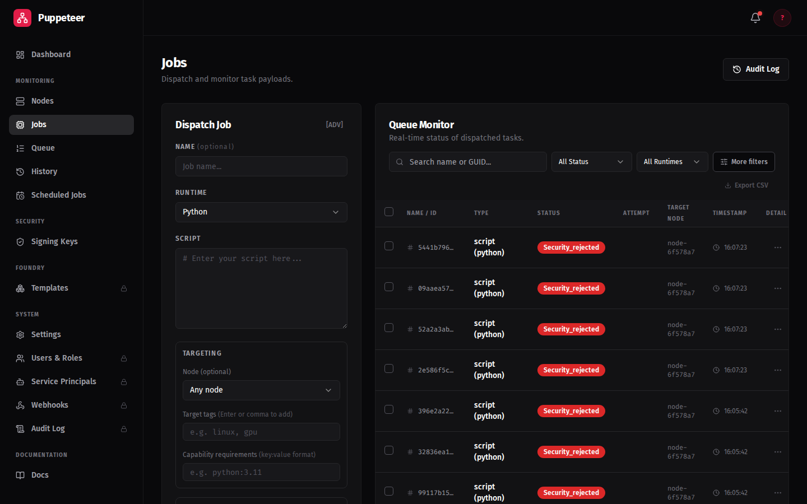
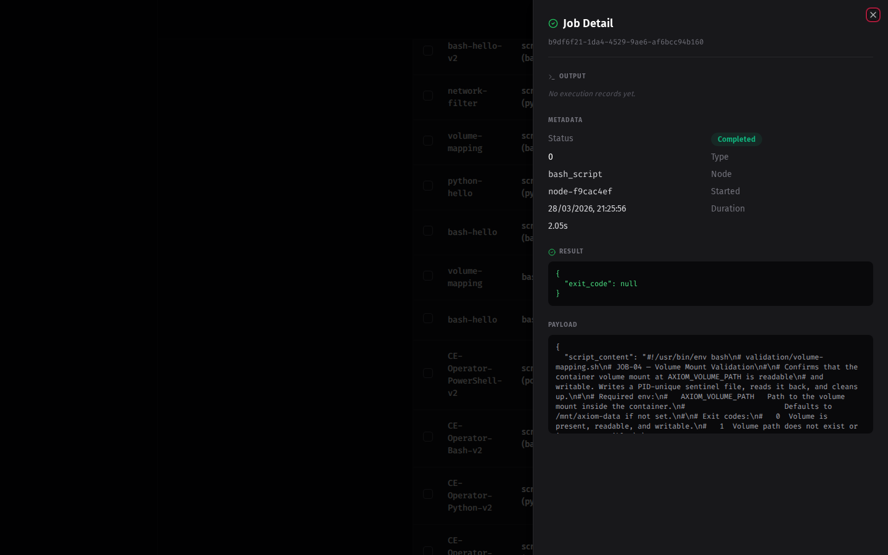

Your First Job
Jobs are Python scripts signed with an Ed25519 private key. The node verifies the signature before executing. This guide walks through generating a signing key, registering the public key, and dispatching your first job.
Step 0: Generate a signing keypair
Every job must be signed before dispatch. Generate a keypair once — the private key stays on your machine, the public key gets registered in Axiom.
python3 - <<'EOF'
from cryptography.hazmat.primitives.asymmetric.ed25519 import Ed25519PrivateKey
from cryptography.hazmat.primitives import serialization
key = Ed25519PrivateKey.generate()
with open("signing.key", "wb") as f:
f.write(key.private_bytes(
serialization.Encoding.PEM,
serialization.PrivateFormat.PKCS8,
serialization.NoEncryption()
))
with open("verification.key", "wb") as f:
f.write(key.public_key().public_bytes(
serialization.Encoding.PEM,
serialization.PublicFormat.SubjectPublicKeyInfo
))
print("Done. Upload verification.key to Axiom, keep signing.key private.")
EOF
openssl genpkey -algorithm ed25519 -out signing.key
openssl pkey -in signing.key -pubout -out verification.key
This produces signing.key (private — keep safe) and verification.key (public — upload to Axiom).
Never commit signing.key
Store it in a secrets manager in production. Anyone who holds it can forge job signatures.
Register the public key
- Go to Signatures in the dashboard sidebar
- Click Register Trusted Key
- Paste the contents of
verification.key, give it a name (e.g.dev-key), click Establish Trust - Note the Key ID — you'll need it when dispatching
Getting started banner
The Signatures page shows a banner with these same commands when no keys are registered yet.
Quick Start (axiom-push CLI)
axiom-push requires EE
axiom-push is an Enterprise Edition feature. CE users should skip to Manual Setup.
Step 0: Set your server URL
export AXIOM_URL=https://your-orchestrator:8001
Step 1: Run axiom-push init
axiom-push init
init completes three steps automatically:
1. Login — opens a browser for the OAuth device flow (skipped if already logged in)
2. Key generation — creates ~/.axiom/signing.key and ~/.axiom/verification.key
3. Registration — uploads the public key to the server and prints your Key ID
On success you will see:
Setup complete.
Key ID: <id>
Push your first job:
axiom-push job push --script hello.py --key ~/.axiom/signing.key --key-id <id>
Copy the printed command — your Key ID is already substituted in.
Generate a keypair without running init (standalone key generation)
Use axiom-push key generate if you only want to create keys locally without logging in:
axiom-push key generate
This writes ~/.axiom/signing.key (0600) and ~/.axiom/verification.key to disk and
prints the public key PEM to stdout. Use --force to overwrite existing keys.
After generation, register the public key in the dashboard:
1. Go to Signatures in the sidebar
2. Click Add Signature Key, paste the printed PEM, give it a name, click Save
3. Note the Key ID for use with --key-id
Step 2: Write a test script
Create hello.py:
print("Hello from Axiom!")
import platform
print(f"Running on {platform.node()} ({platform.system()})")
Step 3: Dispatch the job
axiom-push job push \
--script hello.py \
--key ~/.axiom/signing.key \
--key-id <your-key-id>
- Go to Jobs in the dashboard sidebar
- Click New Job
- Fill in the form:
- Script: paste the contents of
hello.py - Signature: base64-encoded signature (see Manual Setup below)
- Signature Key: select the key you registered
- Target tags: leave blank for any available node, or enter
general
- Script: paste the contents of
- Click Dispatch
Step 4: Verify the result
The job appears in the Jobs list and transitions through statuses:
PENDING → ASSIGNED → COMPLETED
Click the job row to expand the result. The output should show:
Hello from Axiom!
Running on <node-hostname> (Linux)
You've completed the Getting Started guide
Your node is enrolled, jobs are running, and results are captured in the dashboard.
What to explore next:
- Foundry — build custom node images with pre-installed runtimes and packages
- axiom-push CLI — full CLI reference
What the Jobs view looks like
The Jobs view shows all dispatched jobs with their current status:

Click a completed job row to open the job detail panel with output, timing, and attestation details:

Manual Setup
Use this path if you do not have axiom-push or prefer to use openssl directly.
Generate a signing keypair
openssl genpkey -algorithm ed25519 -out signing.key
openssl pkey -in signing.key -pubout -out verification.key
Keep your private key safe
Never commit signing.key to git. In production, store it in a secrets manager.
Register the public key in the dashboard
- Go to Signatures in the dashboard sidebar
- Click Add Signature Key
- Paste the contents of
verification.keyinto the field - Give it a descriptive name (e.g.,
dev-operator-key) - Click Save
- Note the Key ID — you will need it when submitting jobs
Register before dispatching
Job creation fails with a 422 signature validation error if no public key is registered.
Sign and submit with curl
SIG=$(openssl pkeyutl -sign -inkey signing.key -rawin -in hello.py | base64 -w0)
curl -sk -X POST https://<your-orchestrator>:8001/jobs \
-H "Authorization: Bearer $TOKEN" \
-H "Content-Type: application/json" \
-d "{\"script_content\": \"$(cat hello.py | python3 -c 'import sys,json; print(json.dumps(sys.stdin.read()))')\", \"signature\": \"$SIG\", \"signature_key_id\": \"<key-id>\"}"
Set $TOKEN by logging in first:
TOKEN=$(curl -sk -X POST https://<your-orchestrator>:8001/auth/login \
-H 'Content-Type: application/x-www-form-urlencoded' \
-d 'username=admin&password=<your-password>' | python3 -c "import sys,json; print(json.load(sys.stdin)['access_token'])")